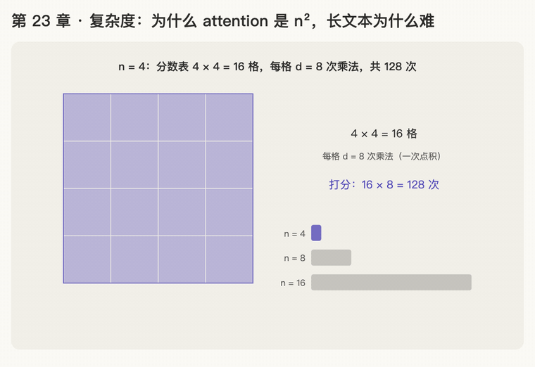

第 23 章 · 复杂度：为什么 attention 是 n²，长文本为什么难
本章回答：一层 self-attention 到底要算多少？它和以前的 RNN 比，好在哪、差在哪？句子从几十个词变成几万个词，为什么就难了？
讲解日期：2026-11-08 起 · 上一章：第 22 章 输入 embedding 与输出 softmax · 下一章：第 24 章 收尾
对应原文：materials/text/papers/attention-is-all-you-need-1706.03762.txtTable 1 L263–L272；§4 Why Self-Attention L300–L338
本章缩写：n = 句子里有几个 token（sequence length：序列 / 长度）；d = \(d_{model}\)，每个词向量有几个数（d = dimension：维度）；O(·) = Big-O notation（大 O 记号：只看"n、d 变大时，工作量按什么规律涨"，不管前面乘的常数）；RNN = Recurrent Neural Network（循环 / 神经 / 网络：一个词一个词按顺序往下传的老式模型）；CNN = Convolutional Neural Network（卷积 / 神经 / 网络：每次只看相邻几个词的"滑动小窗"）；k = kernel size（卷积核宽度：小窗一次看几个词）；r = 受限 attention 的邻居范围（restricted：受限的）；GPU = Graphics Processing Unit（图形 / 处理 / 单元：能同时做成千上万次乘法的芯片）；代码里的名字（PyTorch、nn.Linear等）见附录"PyTorch 对照"。全部缩写见 附录 · 缩写与术语表
讲解
第一步：一层 attention 要算多少：n² · d（2026-11-08）
类比：全班两两握手。 班上 n 个人，每个人都要和每个人（包括自己）握一次手，一共 n × n 次。每次握手还不是碰一下就完：两个人要把各自卡片上的 d 个数一一相乘再加起来（点积，第 2 章），也就是 d 次乘法。
所以光是打分这一步（第 12 章的 \(QK^\top\)）：
乘 V 那一步也一样：输出有 n 行、每行 d 个数，每个数都是 n 项的加权和，又是 \(n \cdot d \cdot n = n^2 d\)。两步合起来大约 \(2n^2d\)。
大 O 记号：只关心"n 变大时，工作量按什么规律涨"，前面的 2 这种常数不管。所以论文 Table 1 写 self-attention 每层是 \(O(n^2 \cdot d)\)（L269）。
例子：d = 8。
| 句子长度 n | 分数表格子数 n² | 打分的乘法次数 n² × d |
|---|---|---|
| 4 | 16 | 128 |
| 8 | 64 | 512 |
| 16 | 256 | 2048 |
n 翻一倍，工作量变成 4 倍；n 变成 10 倍，工作量变成 100 倍。这就是"平方"的意思。
层里别的部分呢？ \(W^Q\)、\(W^K\)、\(W^V\) 投影和 FFN（第 9、20 章）都是"每个词各自乘一个 d × d 左右的矩阵"，n 个词就是 n 份，所以是 \(O(n \cdot d^2)\)：和 n 成正比，不是平方。平方只出在"每个词都要看每个词"这一步。
一句话：attention 让每个词和每个词都打一次分，n × n 格，每格 d 次乘法，所以是 n²·d；句子长一倍，这部分工作量变 4 倍。
第二步：和 RNN 比：算得多一点，但不用排队，路也最短（2026-11-08）
Transformer 之前，翻译模型主要用 RNN。
类比：传话游戏。 n 个人排成一队，第 1 个人把消息加工一下传给第 2 个，第 2 个再加上自己的、传给第 3 个……每传一次，要把手里的 d 个数乘一个 d × d 的矩阵（\(d^2\) 次乘法），一共传 n 次。
论文 §4（L306–L314）用三把尺子比较：
| 尺子 | 意思 |
|---|---|
| ① 每层计算量 | 一共要做多少次乘法 |
| ② 必须排队的步数（Sequential Operations） | 有多少步必须等上一步做完才能开始；排队越少，GPU 越能同时开工 |
| ③ 最长路径（Maximum Path Length） | 第 1 个词的信息传到第 n 个词，中间要经过几步；路越长，信号越容易在路上变弱、丢掉，远距离的关系越难学（L308–L312） |
论文 Table 1（L267–L272）：
| 层的种类 | ① 每层计算量 | ② 必须排队的步数 | ③ 最长路径 |
|---|---|---|---|
| Self-Attention | \(O(n^2 \cdot d)\) | \(O(1)\) | \(O(1)\) |
| Recurrent（RNN） | \(O(n \cdot d^2)\) | \(O(n)\) | \(O(n)\) |
| Convolutional（CNN） | \(O(k \cdot n \cdot d^2)\) | \(O(1)\) | \(O(\log_k n)\) |
| Self-Attention（受限，只看邻居 r 个） | \(O(r \cdot n \cdot d)\) | \(O(1)\) | \(O(n/r)\) |
② 排队：RNN 是传话，第 5 个人必须等第 4 个人传完才能动手，n 个词就是 n 步排队。attention 是全班同时握手，所有格子可以一起算，排队步数和 n 无关，记作 \(O(1)\)（L315–L316）。GPU 擅长"同时做很多"，所以 attention 训练快得多。
③ 路径：RNN 里第 1 个词要传 n − 1 次才到第 n 个词；attention 里任何两个词直接握手，一步就到。
① 计算量：attention 是 \(n^2 d\)，RNN 是 \(n d^2\)。两边都除以 \(n \cdot d\)，比的就是 n 和 d 谁大：
- n < d 时 attention 更省（L316–L321："faster than recurrent layers when the sequence length n is smaller than the representation dimensionality d"）；
- 翻译的句子一般几十个 token，d = 512，所以当年 attention 三把尺子全赢。
例子：n = 50，d = 512：\(n^2 d = 50 \times 50 \times 512 = 1{,}280{,}000\)；\(n d^2 = 50 \times 512 \times 512 = 13{,}107{,}200\)。attention 只有 RNN 的约十分之一。
CNN（卷积）每次只看相邻 k 个词，要叠很多层才能让远处的两个词连上（L327–L330），路径比 attention 长，这里了解一下就行。
一句话：attention 用"每个词都看每个词"换来了"不用排队、任意两个词一步直达"；句子比 d 短的时候，它连计算量都比 RNN 小。
第三步：长文本为什么难：n² 涨得太快，分数表放不下（2026-11-08）
第二步说"n < d 时 attention 更省"。可现在的大模型动不动就读几万、几十万个 token，n 远大于 d，平方就开始咬人了。
① 计算量：n 一大，attention 那部分（n²·d）就超过别的部分（n·d²），成了大头。
② 显存：分数表本身就放不下。 每一层、每一个头都有一张 n × n 的分数表（第 12 章）。按每个数占 2 个字节（半精度）粗算一张表：
| n | 一张分数表的格子数 | 大约多大 |
|---|---|---|
| 1,000 | 100 万 | 2 MB |
| 10,000 | 1 亿 | 200 MB |
| 100,000 | 100 亿 | 20 GB |
n = 100,000 时，一层一个头就要 20 GB，而一块 GPU 的显存通常只有几十 GB。
解决思路（都在后面的阶段 E、F 学，这里只认个名字）：
| 思路 | 做法 | 代价 |
|---|---|---|
| 只看邻居（论文自己提的，L323–L326） | 每个词只看前后 r 个词，计算量变成 \(O(r \cdot n \cdot d)\)；后来的 sliding window（滑动窗口，Longformer、Mistral）就是这个思路 | 远处的词要隔几层才连得上，最长路径变成 \(O(n/r)\) |
| 不把整张表存下来（FlashAttention） | 把表切成小块，一块一块算完就丢，只留最后结果 | 计算量还是 n²，但显存只和 n 成正比 |
| 换掉 softmax（线性注意力、Mamba） | 改写公式，让工作量和 n 成正比 | 和原版 attention 不完全等价，效果要看任务 |
一句话：n 一大，n² 的计算和 n × n 的分数表都扛不住；后来的办法要么少看（只看邻居），要么少存（FlashAttention），要么换公式（线性注意力）。
动画演示：n² 的格子、传话与握手、分数表的显存

可交互版：animations/23-complexity.html（要能点按钮、拖滑块，需要用本地服务打开，见 animations/README.md"跑起来看"；滑块把 n 从 10 拖到 100000（d = 512））。
d = 8 画格子；比较 RNN 时用 6 个词；显存按每个数 2 字节粗算。
怎么看：
- n = 4、8、16：分数表 n × n 格，每格 d 次乘法；n 翻倍，工作量 × 4（第一步）；
- RNN 传话要排队 n − 1 步，attention 所有格子同时算（第二步）；
- 最长路径：RNN 走 n − 1 步，attention 一步直达（第二步）；
- n = 50、d = 512：n²d 只有 nd² 的约 1/10（第二步）；
- n = 1000、10000、100000 时一张分数表的显存：2 MB → 200 MB → 20 GB（第三步）；
- 滑块：看格子数、attention ÷ RNN（= n ÷ d）、一张分数表的显存；n 超过 512 后比值变红。
练习与作答记录
题 1（第一步 n²·d）：d = 8，句子 n = 10。 （a）分数表有几格？打分一共要做多少次乘法？ （b）句子变成 n = 20，打分的工作量变成原来的几倍？
题 2（第二步 和 RNN 比）：一句话 100 个词。 （a）RNN 必须排队几步？attention 呢？ （b）第 1 个词的信息传到第 100 个词，RNN 要走几步？attention 呢？
题 3（第二步 谁更省）：d = 512，一篇文章 n = 2000 个 token。\(n^2 d\) 和 \(n d^2\) 哪个大？大约是几倍？
题 4（第三步 长文本）：上下文从 n = 4000 扩到 n = 32000。一张分数表的格子数变成原来的几倍？
口诀
全班两两握手，n 乘 n 格，每格 d 次乘，n 方乘 d。
句子长一倍，握手变四倍。
RNN 传话要排队，路长信号丢；attention 同时握手，一步直达。
n 比 d 小它更省，n 比 d 大平方咬人。
长文本三条路：只看邻居、分块不存、换掉 softmax。
本章复习卡片
（练习做完后，按答错、卡住的地方补上。）
附录 · 延伸阅读
留给以后深入学习用，不影响本章主线。★ 是建议先读的。
- 本地论文的文本版在materials/text/papers/，表里的行号就是指这个文本版。
推荐阅读
| 读什么 | 读哪里 | 读它为了什么 |
|---|---|---|
| ★ Attention Is All You Need | Table 1 L263–L272；§4 L300–L338 | 本章原文：三把尺子（L306–L314）、n < d 时更快（L316–L322）、受限 attention（L323–L326）、卷积（L327–L334）、可解释性（L335–L338） |
| ★ Dao et al. 2022，FlashAttention | flashattention-2205.14135.txt 摘要 L16–L35 |
"计算量不变，但不存整张分数表"：显存从 n² 降到 n，是现在训练长文本的标配（阶段 E） |
| Beltagy et al. 2020，Longformer | longformer-2004.05150.txt 摘要 L11 起；Figure 2 的四种注意力图案 L124 |
滑动窗口 + 少数全局词：论文 L323–L326 "只看邻居"思路的完整版 |
| Jiang et al. 2023，Mistral 7B | mistral-7b-2310.06825.txt L41；Figure 1 L63 |
现代模型里的 sliding window attention：每层只看前 W 个词，叠很多层后能"间接"看得很远 |
| Katharopoulos et al. 2020，Transformers are RNNs | linear-attention-transformers-are-rnns-2006.16236.txt 摘要 L8 起 |
线性注意力：去掉 softmax 后能改写成 O(n) 的形式，而且生成时又变回了"RNN"（阶段 F） |
| Hochreiter et al. 2001，Gradient Flow in Recurrent Nets | 本地没有文本版；AIAYN 参考文献 [12]，L580 | 论文"路径越长越难学"（L312）的出处：RNN 里信号一步步传，会越传越弱 |
数学原理
- 大 O 记号：\(f(n) = O(g(n))\) 表示 n 很大时，f 最多是 g 的常数倍。\(2n^2d\) 和 \(n^2d\) 都记作 \(O(n^2 d)\)。
- 平方增长：\((cn)^2 = c^2 n^2\)，n 变成 c 倍，工作量变成 \(c^2\) 倍（翻倍 → 4 倍，10 倍 → 100 倍）。
- 交叉点：\(n^2 d < n d^2 \iff n < d\)（两边同除以 \(n d\)）。
- 一层的完整计算量（每个词算一次）：投影 \(W^Q, W^K, W^V, W^O\) 约 \(4nd^2\)，FFN 约 \(2n \cdot d \cdot d_{ff} = 8nd^2\)（\(d_{ff} = 4d\)），attention 打分加乘 V 约 \(2n^2 d\)。令 \(2n^2d = 12nd^2\) 得 \(n = 6d\)：n 超过约 6 倍的 d，attention 部分就成了大头（只数乘法，粗略估计）。
- 分数表大小：每层每头 \(n^2\) 个数；全部要存的话乘层数 N 和头数 h。
公式清单
| 公式 | 意思 |
|---|---|
| 打分 \(n \times n \times d = n^2 d\) | 分数表 n² 格，每格 d 次乘法 |
| self-attention：\(O(n^2 d)\)、排队 \(O(1)\)、路径 \(O(1)\) | Table 1 第一行 |
| RNN：\(O(n d^2)\)、排队 \(O(n)\)、路径 \(O(n)\) | Table 1 第二行 |
| 受限 attention：\(O(r \cdot n \cdot d)\)、路径 \(O(n/r)\) | 只看邻居 r 个 |
| \(n < d\) 时 \(n^2 d < n d^2\) | attention 比 RNN 省的条件 |
PyTorch 对照：把本章的数字用代码算一遍
代码在仓库本地
transformer-deep-dive/solutions/chapter-code/ch23_complexity.py，配套测试tests/test_ch23_24.py（在线版不带代码文件，下面摘了关键几行）。Mac 上直接能跑，不需要 GPU：
bash cd transformer-deep-dive/solutions/chapter-code uv run python ch23_complexity.py
讲义 ↔ 代码：
| 讲义 | 公式 / 说法 | PyTorch 写法 | 跑出来 |
|---|---|---|---|
| 打分的乘法次数 | \(n^2 d\) | FlopCounterMode 数 q @ k.T |
d = 8，n = 4、8、16：128、512、2048 |
| FLOPs | 乘一次、加一次各算 1 个 | counter.get_total_flops() |
256、1024、4096 = 2 × 乘法 |
| 和 RNN 比 | \(n^2d\) vs \(nd^2\) | 直接算 | n = 50、d = 512：1,280,000 vs 13,107,200 |
| RNN 要排队 | 一步等一步 | nn.RNNCell 的 for 循环 |
6 个词算 6 步 |
| 分数表的内存 | \(n^2\) × 2 字节 | numel() * element_size() |
n = 1000、1 万、10 万：2 MB、200 MB、20 GB |
关键几行：
with FlopCounterMode(display=False) as counter:
q @ k.T
counter.get_total_flops() # = 2 × n² × d
for t in range(n):
h = cell(x[t], h) # RNN：每一步都要用上一步的 h
代码里才看得到的：
- FLOPs（floating point operations：浮点 / 运算 次数）：论文和工具数计算量时，乘一次、加一次各算 1 个，所以是乘法次数的 2 倍。以后看到"训练用了多少 FLOPs"就是这个单位（续篇数 FLOPs 那章会用）。
- RNN 只能写成 for 循环：
h = cell(x[t], h)右边要用上一步的h，没法让第 5 步和第 4 步同时算；attention 的q @ k.T一次交给 GPU。这就是 Table 1 里"排队步数 O(n) vs O(1)"。 - 只算不分配：n = 10 万时一张表 20 GB，真分配会把 Mac 内存撑爆，所以代码里只用乘法算大小。
自己改一改：
- 练习题（n = 10、20，2000，4000 → 32000）先手算，再改代码里的 n 验证。